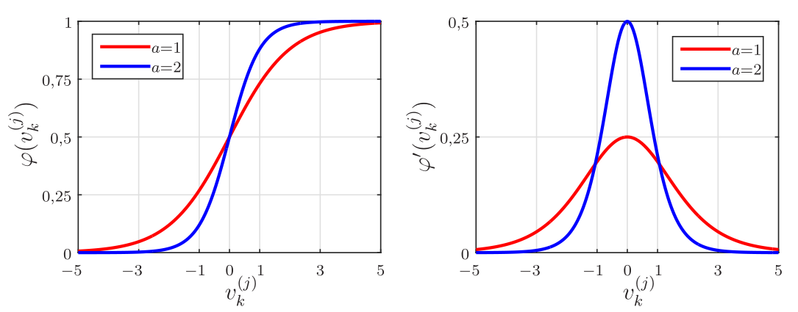
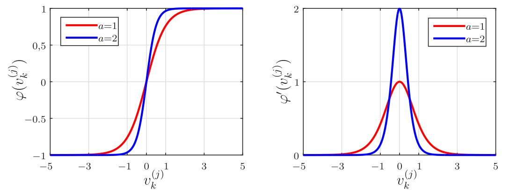
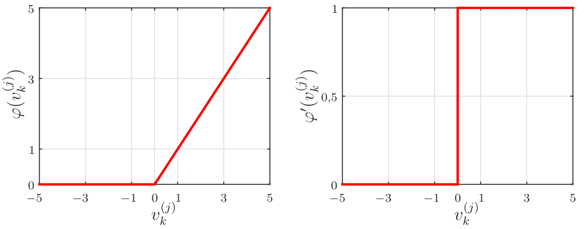
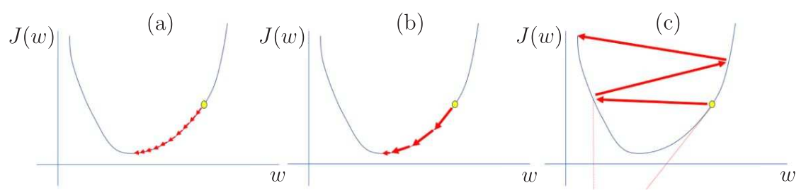
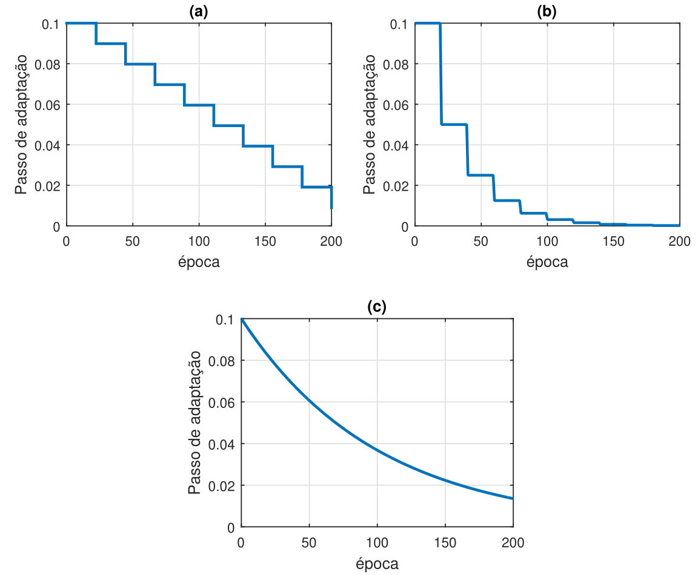
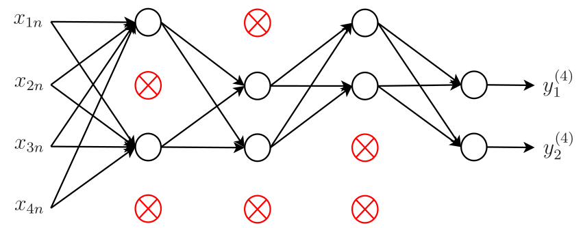
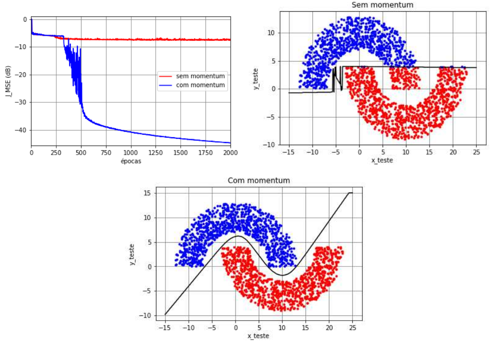
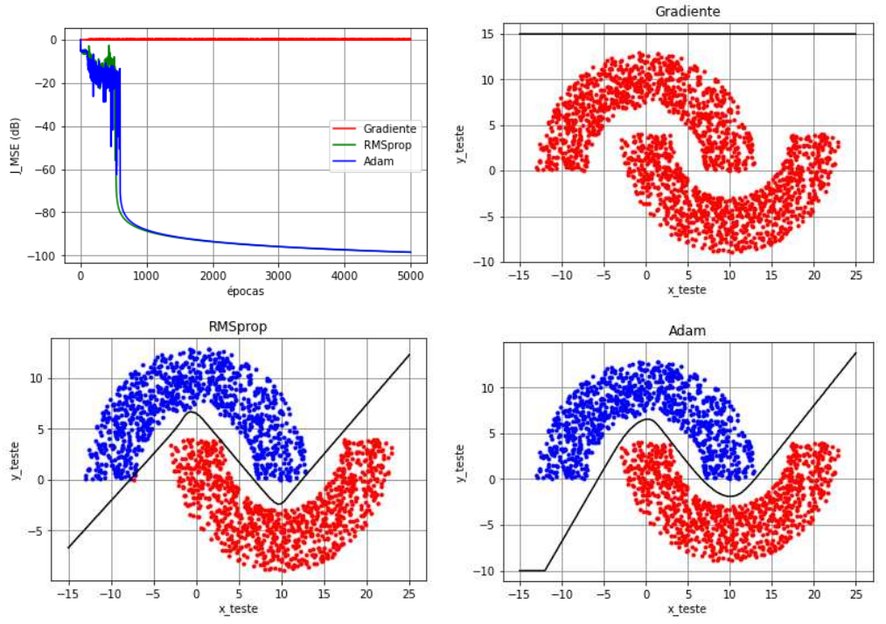
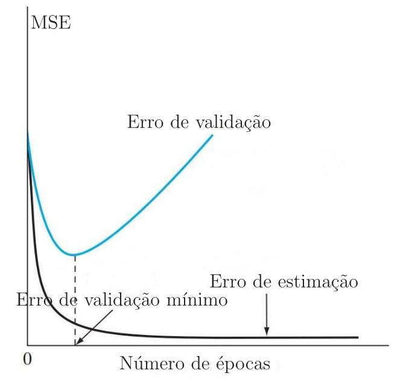
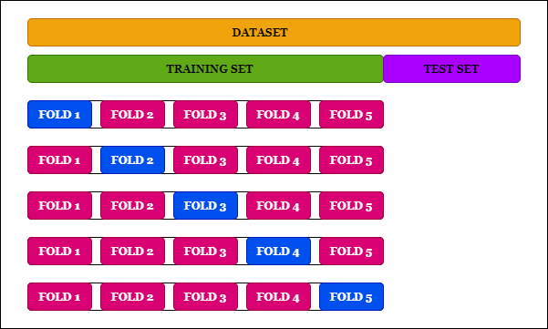

Evitando mínimos locais e overfitting
Conteúdo
Evitando mínimos locais e overfitting¶
Há diferentes maneiras de evitar que o algoritmo backpropagation fique parado em um mínimo local da função custo, evitando assim que a rede atinja soluções subótimas no treinamento. Outro problema que pode acontecer no treinamento das redes neurais é o chamado overfitting, em que a solução da rede fica especializada nos dados de treinamento e tem um desempenho ruim com os dados de teste. Vimos um exemplo de overfitting quando abordamos a regressão linear multivariada. A seguir, vamos abordar as técnicas mais usadas para evitar esses problemas. Boa parte delas envolve o ajuste de hiperparâmetros, que por sua vez, são todos os parâmetros da rede que permanecem inalterados durante o treinamento. Por exemplo, o passo de adaptação \(\eta\) é um hiperparâmetro enquanto os pesos não o são.
Função de ativação¶
O cálculo do gradiente para atualização do vetor de pesos de um determinado neurônio requer o conhecimento da derivada da função de ativação \(\varphi(\cdot)\) associada a ele. Para essa derivada existir, a função \(\varphi(\cdot)\) deve ser contínua. Basicamente, ser diferenciável é a única propriedade que a função de ativação deve satisfazer. A seguir vamos descrever as funções de ativação mais usadas na MLP.
Sigmoidal¶
A função sigmoidal também é conhecida como função logística. Embora alguns autores utilizem o termo “sigmoidal” para uma classe de funções em que a logística e a tangente hiperbólica são exemplos, o termo “sigmoidal” é frequentemente utilizado para a função definida como
em que \(v_k^{(j)}\) é o resultado da combinação linear entre as entradas e os pesos do Neurônio \(k\) da Camada \(j\) e \(a\) é um parâmetro positivo ajustável. A derivada dessa função é dada por
Como \(\varphi(v_k^{(j)})=y_k^{(j)}\) é a saída do Neurônio \(k\) da Camada \(j\), ainda podemos escrever
Na Fig. 33 são mostrados gráficos da função sigmoidal e de sua derivada para dois valores de \(a\). Pode-se observar que a saída do neurônio com função sigmoidal fica no intervalo \([0,\; 1]\). Quanto maior o valor do parâmetro \(a\) mais abrupta é a mudança do patamar \(0\) para o patamar \(1\) e consequentemente maior a derivada em \(v_k^{(j)}=0\).
{kind=link}

Fig. 33 Função sigmoidal e sua derivada para dois valores do parâmetro \(a\).¶
Tangente hiperbólica¶
Outra função de ativação muito utilizada na MLP é a tangente hiperbólica, que também é uma função do tipo sigmoidal. Essa é a função de ativação que usamos nos experimentos com a rede MLP até agora (com \(a=1\)). A tangente hiperbólica é definida como
sendo \(a\) uma constante positiva. Sua derivada é dada por
Lembrando que a saída do Neurônio \(k\) com função de ativação tangente hiperbólica é dada por \(y_k^{(j)}={\rm tanh}(v_k^{(j)})\), também podemos escrever
Na Fig. 34 são mostrados gráficos da função tangente hiperbólica e de sua derivada para dois valores de \(a\). Pode-se observar que a saída do neurônio com essa função fica no intervalo \([-1,\; 1]\). Quanto maior o valor do parâmetro \(a\) mais abrupta é a mudança do patamar \(-1\) para o patamar \(1\) e consequentemente maior a derivada em \(v_k^{(j)}=0\).
{kind=link}

Fig. 34 Função tangente hiperbólica e sua derivada para dois valores do parâmetro \(a\).¶
ReLU¶
A unidade linear retificada (Rectified Linear Unit - ReLU) é uma função de ativação dada por
Essa função também é conhecida como função rampa e é análoga ao retificador de meia-onda, o que justifica seu nome. Sua derivada é dada por
Na Fig. 35 são mostradas a função ReLU e a sua derivada. Observe que a função ReLU não é diferenciável em \(v_k^{(j)}=0\). Como ela é diferenciável em todos os outros valores de \(v_k^{(j)}\), o valor de sua derivada em zero pode ser arbitrariamente escolhida como 0 ou 1. Em geral, o treinamento de redes MLP profundas que usam essa função é mais rápido quando comparado ao treinamento das redes MLP que usam a tangente hiperbólica. Essa função foi baseada no princípio de que os modelos são mais facilmente otimizados quando o seu comportamento é próximo do linear.
{kind=link}

Fig. 35 Função ReLU e sua derivada (a derivada em \(v_k^{(j)}=0\) foi arbitrariamente escolhida como 0).¶
Na literatura, há diferentes variantes da ReLU, como:
Softplus;
Gaussian Error Linear Unit (GELU);
Leaky rectified linear unit (Leaky ReLU);
Parametric rectified linear unit (PReLU);
Exponential linear unit (ELU);
Sigmoid linear unit (SiLU).
Algumas dessas funções são diferenciáveis em todos os pontos, o que evita ter que escolher arbitrariamente o valor da derivada em \(v_k^{(j)}=0\). A ReLU ainda é a mais utilizada em redes profundas. Ela apresenta algumas vantagens como:
ativação esparsa: em uma rede inicializada aleatoriamente, apenas 50% dos neurônios ocultos são ativados (saída não nula);
melhor propagação do gradiente: consegue escapar de mínimos locais em comparação com funções do tipo sigmoidal;
computação eficiente;
invariante à escala: \(\max(0,\,ax)= a\,\max(0,\,x),\;\;a>0\).
Apesar dessas vantagens, a ReLU é ilimitada, o que pode levar o algoritmo de treinamento à divergência. Além disso, neurônios com ReLU podem se tornar inativos para essencialmente todas as entradas. Nesse estado, nenhum gradiente é retropropagado e o neurônio “morre”. Em alguns casos, muitos neurônios podem ficar inativos, diminuindo efetivamente a capacidade do modelo. Esse problema geralmente surge quando a taxa de aprendizado (passo de adaptação) é muito alta e pode ser evitado usando a função leaky ReLU, que atribui uma pequena inclinação positiva para entradas negativas.
Softmax¶
Em problemas de classificação multiclasse, é comum considerar uma rede com \(N_L\) neurônios de saída, sendo \(N_L\) o número de classes. Nesse caso, a saída esperada da rede é a ativação de apenas um dos \(N_L\) neurônios e a inativação dos \(N_L-1\) restantes. Para isso, costuma-se usar a função de ativação softmax nos neurônios de saída. Como a função sigmoidal, a função softmax limita a saída do neurônio entre 0 e 1. Porém, ela também leva em conta as saídas dos demais neurônios da camada. Dessa forma, considera-se uma normalização fazendo com que a soma de todas as saídas dos neurônios seja unitária, o que faz com que o vetor saída da rede seja um vetor de probabilidades. A função softmax para o \(k\)-ésimo neurônio da camada de saída é dada por
em que \(0\leq\varphi(v_k^{(L)})\leq 1\) e \(\sum_{\ell=1}^{N_L}\varphi(v_\ell^{(L)})=1\). A derivada dessa função é dada por
Função custo¶
A escolha da função custo depende da finalidade da rede neural. Quando empregada em problemas de regressão, é comum usar o erro quadrático médio (Mean Squared Error - MSE) definido por
em que
são os erros dos neurônios da camada de saída da rede. Apesar de não ser a função custo mais adequada para problemas de classificação, o MSE foi utilizado nos problemas das meias-luas apresentados até o momento.
Quando empregada em problemas de classificação, é comum usar a entropia cruzada, uma vez que ela é mais adequada para erros de categorização. No caso de classificação binária em que as categorias são \(d = 0\) ou \(d=1\) e existe apenas um neurônio de saída, a entropia cruzada é dada por
Para entender essa função, considere novamente o problema das meias-luas, mantendo \(d=1\) para a Região A, mas considerando que \(d=0\) para a Região B. Quando \(y_1^{(L)}(n)\geq 0,5\) a rede classifica o dado como pertencente à Região A e para \(y_1^{(L)}(n)<0,5\) o dado é classificado como pertencente à Região B. Dessa forma, a saída da rede pode ser interpretada como a probabilidade do dado de entrada pertencer à Região A. Quando \(d_1(n)=y_1^{(L)}(n) \in \{0, 1\}\), \(J_{\rm EC}=0\), que é o valor mínimo que essa função custo pode assumir. Para \(d_1(n)=1\) e \(y_1^{(L)}(n)=0,1\), a rede erra, pois classifica o dado como pertencente à Região B enquanto ele de fato pertence à Região A e \(J_{\rm EC}=-1\times \ln(0,1)=2,3026.\) A função custo tem o mesmo valor para \(d_1(n)=0\) e \(y_1^{(L)}(n)=0,9\), caso em que também há erro de classificação. No caso de classificação entre \(N_L\) classes, essa função é chamada de entropia cruzada categórica e é dada por
Uma das maneiras de se reduzir overfitting é usar regularização na função custo. Isso controla o ajuste dos pesos, possibilitando que a rede tenha uma boa capacidade de generalização. A regularização \(\ell_2\) é a mais comum e consiste em somar à função custo o termo $\(\frac{\lambda}{2N_L}\sum_{\ell=1}^{N_L}\|\mathbf{w}_\ell^{(L)}(n-1)\|^2,\)\( em que \)\lambda$ é um hiperparâmetro. Assim, ao minimizar a função custo somada a esse termo, o algoritmo também procura minimizar a norma dos vetores de peso da camada de saída, evitando dessa forma que ocorra divergência.
Existem também outras funções custo cujas derivadas não são determinadas analiticamente, mas podem ser obtidas por diferenciação automática (autodiff), que é um conjunto de técnicas usadas para avaliar derivadas de funções numéricas expressas como programas de computador. Mais detalhes sobre autodiff podem ser obtidos em
A. G. Baydin, B. A. Pearlmutter, A. A. Radul e J. M. Siskind: “Automatic differentiation in Machine Learning: a survey”, Journal of Machine Learning Research, 18(153) 1-43, 2018.
Inicialização¶
Sabemos que a inicialização é fundamental para que a rede MLP evite mínimos locais. Nos experimentos com as meias-luas que apresentamos até agora, os pesos e biases foram inicializados com números aleatórios gerados a partir de uma distribuição uniforme no intervalo \([-10^{-2},\;10^{-2}]\). Como não se tem ideia dos valores dos parâmetros ótimos, de fato os pesos precisam ser inicializados de forma aleatória. O problema da forma que inicializamos é definir o intervalo da distribuição uniforme. O intervalo “ideal” depende do conjunto de dados, da arquitetura da rede etc. e sua escolha se torna mais difícil ainda em redes profundas. Além disso, uma pergunta que poderíamos fazer é: a inicialização dos parâmetros da rede considerando uma distribuição uniforme é a mais adequada?
No algoritmo backpropagation, o cálculo do gradiente local de uma determinada camada \(j\) da rede depende dos gradientes locais das camadas posteriores, ou seja, o gradiente local \(\delta^{(j)}_k\) carrega consigo a multiplicação de todos os gradientes locais das camadas mais profundas da rede. Para redes neurais profundas, se os gradientes locais forem menores do que um, as atualizações dos pesos e biases das camadas mais rasas acabam assumindo valores muito pequenos, tornando o processo de aprendizado lento e ineficiente. Analogamente, para gradientes locais sempre maiores que um, as atualizações dos pesos das camadas menos profundas acabam assumindo valores muito elevados, levando o algoritmo de treinamento à divergência. Esse problema é conhecido como desvanecimento ou explosão dos gradientes. O objetivo das técnicas de inicialização de parâmetros é evitar esse problema. Dessa forma, os pesos e biases precisam ser inicializados dentro de um intervalo específico.
A seguir, vamos abordar duas técnicas de inicialização que foram propostas recentemente na literatura.
Inicialização de Xavier¶
A inicialização de Xavier foi proposta originalmente no artigo
Xavier Glorot, Yoshua Bengio: “Understanding the difficulty of training deep feedforward neural networks,” Proceedings of the Thirteenth International Conference on Artificial Intelligence and Statistics, pp. 249-256, 2010.
Para entender a ideia dessa inicialização, vamos primeiramente considerar que os neurônios da rede MLP têm função de ativação do tipo sigmoidal e pesos grandes. Como a função do tipo sigmoidal é plana para valores grandes da entrada, as ativações ficarão saturadas e os gradientes começarão a se aproximar de zero.
Para evitar esse problema, a inicialização de Xavier busca garantir que a variância de \(y^{(j)}_k\) seja mantida igual ao longo das camadas, o que pode evitar o problema de desvanecimento ou explosão dos gradientes. Considerando função de ativação linear, temos
Calculando a variância de \(y_k^{(j)}\), obtém-se
Assumindo que os biases foram inicializados com zero, sua variância também é nula. Portanto, precisamos calcular apenas a variância dos termos do lado direito da equação que contém os pesos. Assumindo independência entre os pesos e as entradas da camada \(j\), temos
\(\ell=1,2,\cdots,N_{j-1}.\) Considerando ainda que as entradas e os pesos têm médias nulas, a expressão anterior se reduz a
Usando esse resultado no cálculo da variância de \(y_k^{(j)}\), chega-se a
Como se deseja que \({\rm var}(y_k^{(j)})={\rm var}(y_\ell^{(j-1)})\), obtemos
Diante desse resultado, a inicialização de Xavier propõe inicializar os pesos utilizando uma distribuição normal com média nula e desvio padrão \(1/\sqrt{N_{j-1}}\), ou seja
Uma variante dessa inicialização, conhecida na literatura como inicialização de Glorot, leva em conta também o número de número de neurônios da camada \(j\), ou seja
A ideia dessa inicialização é preservar também a variância do sinal retropropagado e para isso, considera que a variância do peso é aproximada por
Há ainda variantes dessas inicializações que utilizam a distribuição uniforme. Assim, a inicialização de Xavier com distribuição uniforme é
e a inicialização de Glorot com distribuição uniforme é
Inicialização de He¶
O problema de desvanecimento ou explosão dos gradientes visto com funções de ativação do tipo sigmoidal geralmente não ocorre quando se usa ReLU. Diante disso, foi proposta uma inicialização alternativa à de Xavier para neurônios que consideram ReLU, conhecida como inicialização de He, no artigo
Kaiming He, Xiangyu Zhang, Shaoqing Ren, Jian Sun: “Delving deep into rectifiers: surpassing human-level performance on ImageNet classification,” Proceedings of the IEEE International Conference on Computer Vision (ICCV), pp. 1026-1034, 2015.
Basicamente, a inicialização de He propõe que os pesos tenham o dobro da variância calculada anteriormente, ou seja,
o que leva à seguinte inicialização considerando a distribuição normal
e à seguinte variante para distribuição uniforme
Passo de Adaptação¶
Um dos principais hiperparâmetros que precisam ser ajustados no treinamento de uma rede neural é o passo de adaptação ou taxa de aprendizagem. Se o passo for muito baixo, a convergência do algoritmo de treinamento será muito lenta como mostrado na Fig. 36(a). Em contrapartida, um passo muito elevado pode levar o algoritmo à divergência, caso ilustrado na Fig. 36(c). Na Fig. 36(b), considera-se um passo ideal que proporciona uma rápida convergência. O passo de adaptação ideal depende da superfície de desempenho, que, por sua vez, depende da arquitetura da rede e do conjunto de dados. O treinamento da rede pode ser acelerado quando se utiliza uma taxa de aprendizagem ideal.
{kind=link}

Fig. 36 Três passos de adaptação diferentes: (a) passo muito baixo que requer muitas iterações até que o algoritmo atinja o mínimo da função custo; (b) passo ótimo que faz com que o algoritmo atinja o mínimo rapidamente e (c) passo muito elevado que pode levar o algoritmo à divergência. [Fonte].¶
Uma das técnicas mais utilizadas para ajustar o passo de adaptação é a learning rate annealing. Nessa técnica, o valor do passo deve ser relativamente alto no início e diminuir gradualmente ao longo do treinamento. Com um passo elevado no início do treinamento, os pesos e biases são ajustados rapidamente para valores “bons”, ou seja, uma taxa alta pode fazer com que o algoritmo “pule” mínimos locais. Em seguida, uma taxa de aprendizagem pequena faz um ajuste fino, possibilitando o algoritmo explorar as partes “mais profundas” da função custo. A forma mais comum de fazer isso é considerar o decaimento do passo em escada ou exponencial, como ilustrado na Fig. 37. No decaimento em escada com degraus uniformes da Fig. 37(a), o passo da \(k\)-ésima época foi calculado como
em que \(\eta_0\) é o valor inicial do passo, \(\Delta \eta\) o valor do decaimento e \(\Delta k\) o número de épocas em que o passo é mantido fixo. No caso da Fig. 37, foram usados \(\eta_0=0,1\), \(\Delta \eta=0,0101\) e \(\Delta k=20\). No decaimento em escada com degraus não uniformes da Fig. 37(b), o passo da \(k\)-ésima época foi calculado como
No caso da Fig. 37(b), foram usados \(\eta_0=0,1\), \(\Delta \eta=0,5\) e \(\Delta k=20\). Por fim, no decaimento exponencial da Fig. 37(c), o passo da \(k\)-ésima época foi calculado como
No caso da Fig. 37(c), foram usados \(\eta_0=0,1\) e \(a=0,01\).
{kind=link}

Fig. 37 learning rate annealing: (a) decaimento em escada uniforme, (b) decaimento em escada não uniforme e (c) decaimento exponencial.¶
O desafio de usar esquemas de ajuste dos passos de adaptação é que seus hiperparâmetros precisam ser definidos com antecedência e dependem da arquitetura da rede e do problema. Além disso, pode ser conveniente adaptar pesos de neurônios de camadas diferentes com passos distintos. Algoritmos de otimização como Adam e RMSprop resolvem esses problemas, pois ajustam os passos de adaptação de forma automática com o uso de regularização, como veremos posteriormente.
Mini-batch¶
Abordamos anteriormente o treinamento do algoritmo LMS nos modos batch, mini-batch e estocástico1. Como o algoritmo LMS foi proposto para aplicações de tempo real, o modo estocástico é o mais utilizado. A cada dado de entrada se deseja ter o dado de saída correspondente com o menor atraso possível, ou seja, o treinamento ocorre junto com a inferência. A saída e o erro calculados no treinamento são utilizados para atualizar os pesos e ao mesmo tempo para se obter a estimativa ou classificação desejada.
No caso das redes neurais, o modo mini-batch é o mais utilizado. Geralmente, a inferência não é realizada durante o treinamento. A saída e o erro são utilizados no treinamento apenas para atualizar os pesos do algoritmo. Depois do treinamento, fixam-se os pesos para então se fazer a inferência e testar o classificador ou regressor. Apesar de termos abordado os três modos de treinamento apenas no algoritmo LMS, a extensão para redes neurais é direta.
O uso de mini-batch no processo de aprendizado consiste em dividir aleatoriamente o conjunto de treinamento da rede em blocos de tamanho previamente definido, embaralhando-se as amostras do conjunto. A atualização dos pesos e biases ocorre apenas depois que são calculados os gradientes de todos os elementos de um mini-batch. Dessa forma, a atualização dos parâmetros da rede está associada à média dos gradientes de um mini-batch. Considera-se passada uma época quando todos os mini-batches são percorridos. Após cada época do algoritmo de otimização, a divisão do conjunto de treinamento entre mini-batches é refeita de maneira aleatória, embaralhando-se novamente o conjunto de treinamento. O tamanho de cada mini-batch é um hiperparâmetro e não muda no decorrer das épocas.
Quando se considera que cada mini-batch é formado apenas por uma amostra do conjunto de treinamento, diz-se que o método de atualização de parâmetros é estocástico. O uso do método estocástico para atualização de parâmetros de uma rede neural é pouco eficiente, pois a atualização ocorre em direções distintas do mínimo da função custo, o que faz com que o algoritmo leve mais épocas para convergir. O método estocástico também anula as vantagens computacionais de uma implementação matricial do algoritmo, uma vez que as atualizações são realizadas sobre cada amostra de treinamento.
Quando um mini-batch possui todos os elementos do conjunto de treinamento, nomeia-se o método de atualização de parâmetros apenas como batch. Com o método batch, os parâmetros são sempre atualizados na direção do mínimo da função custo. Diante disso, o batch seria o modo de treinamento ideal se não houvesse limitações computacionais. Como é necessário esperar que todo o conjunto de treinamento seja percorrido para se realizar a atualização dos parâmetros, o modo de treinamento batch é muito demorado e computacionalmente ineficiente quando comparado com o mini-batch.
Dropout¶
Outro problema que pode aparecer no treinamento das redes neurais é o overfitting, que ocorre quando há uma diferença significativa entre o desempenho da rede sobre seu conjunto de treinamento e sobre um outro conjunto distinto de dados, o conjunto de teste. Neste caso, a rede se especializa tanto no conjunto de treinamento, que não apresenta capacidade de generalização satisfatória para outros dados. Uma das técnicas mais utilizadas para evitar esse problema é o dropout. Essa técnica basicamente inativa aleatoriamente, em cada iteração do algoritmo backpropagation, diferentes neurônios de cada camada oculta da rede. Cada neurônio é inativado com probabilidade \(p\), sendo \(p\) o hiperparâmetro associado a essa esquema. Na {numref}`fig_dropout, exemplifica-se a aplicação do dropout com \(p = 0,5\). Observe que metade dos neurônios de cada camada oculta (neurônios destacadas em vermelho) foram inativados em uma determinada iteração. Quando um neurônio é inativado, seu gradiente é nulo de modo que seus pesos não são atualizados. Heuristicamente, a eliminação temporária de diferentes conjuntos de neurônios leva ao treinamento de redes neurais distintas. Dessa forma, o procedimento de eliminação é equivalente ao cálculo da média dos efeitos de um grande número de redes distintas. Como elas vão se adaptar de diferentes maneiras, isso possibilita a redução do overfitting, pois será mais difícil para a rede se especializar nos dados de treinamento.
{kind=link}

Fig. 38 Exemplo de aplicação do dropout em uma rede MLP com \(p = 0,5\).¶
Momentum¶
Como vimos anteriormente, o algoritmo LMS é uma aproximação estocástica do algoritmo do gradiente exato (steepest descent). Vimos também que existe um compromisso entre a velocidade de convergência e a precisão da solução. Quanto menor o passo de adaptação, mais lento é o algoritmo e os pesos variam menos em torno da solução de Wiener. Quanto maior o passo, maior a sua velocidade de convergência e maior também a variação dos pesos torno da solução ótima. O algoritmo também pode divergir dependendo do valor do passo e neste caso, os pesos vão para infinito. O mesmo acontece com o algoritmo backpropagation: quanto menor for o passo de adaptação, menores serão as mudanças nos pesos da rede de uma iteração para outra, mais suave será a trajetória no espaço dos pesos e mais lenta a taxa de aprendizagem. Se aumentarmos muito o passo de adaptação para acelerar a taxa de aprendizagem, as mudanças dos pesos de uma iteração para outra também aumentam e o algoritmo pode divergir.
Um método simples de aumentar a taxa de aprendizagem sem causar divergência é modificar a adaptação do backpropagation incluindo um termo chamado momentum. Antes de introduzir esse termo, vamos lembrar da atualização da matriz de pesos da Camada \(j\) da MLP com o algoritmo backpropagation:
em que
Definindo agora a matriz $\( \boldsymbol{\Delta}\mathbf{W}^{(j)}(n-1)\triangleq\mathbf{W}^{(j)}(n-1)-\mathbf{W}^{(j)}(n-2), \)$
que representa a diferença entre a matriz de pesos da iteração \(n-1\) e da iteração \(n-2\), a atualização do backpropagation com momentum fica
em que \(0\leq \alpha<1\) é a constante de momentum. Observe que \(\alpha=0\) leva essa atualização à forma padrão do backpropagation sem momentum. Usando a definição \(\boldsymbol{\Delta}\mathbf{W}^{(j)}(n)\), podemos reescrever essa equação de atualização como
Para entender o efeito do termo de momentum, note que
O termo \(\alpha^n\boldsymbol{\Delta}\mathbf{W}^{(j)}(0)\) tende a zero a medida que o número de iterações aumenta, uma vez que \(0\leq\alpha<1\) e os pesos são inicializados com valores finitos. Assim, podemos escrever
Essa equação nos possibilita entender os efeitos benéficos do momentum, enumerados a seguir:
o ajuste \(\boldsymbol{\Delta}\mathbf{W}^{(j)}(n)\) representa a soma de uma série temporal ponderada exponencialmente. Como \(0\leq \alpha<1\), consideram-se pesos maiores para ajustes recentes e pesos menores para os mais antigos. Dessa forma, \(\alpha\) também é chamado na literatura de fator de esquecimento;
quando o termo \(\boldsymbol{\Delta}_{\delta}^{(j)}(n)\) tem o mesmo sinal algébrico em sucessivas iterações, a matriz \(\boldsymbol{\Delta}\mathbf{W}^{(j)}(n)\) cresce em magnitude e a matriz de pesos \(\mathbf{W}^{(j)}(n)\) é ajustada com uma grande quantidade. Diante disso, o momentum tende a acelerar a convergência do backpropagation em direções de descida mais íngreme;
quando o sinal algébrico do termo \(\boldsymbol{\Delta}_{\delta}^{(j)}(n)\) muda em sucessivas iterações, a matriz \(\boldsymbol{\Delta}\mathbf{W}^{(j)}(n)\) diminui em magnitude e a matriz de pesos \(\mathbf{W}^{(j)}(n)\) é ajustada com uma pequena quantidade. Diante disso, o momentum tem o efeito de estabilizador em direções que oscilam em sinal.
Em suma, a incorporação do momentum no algoritmo backpropagation pode trazer alguns efeitos benéficos no aprendizado, incluindo a possibilidade de evitar que o algoritmo fique estagnado em um mínimo local.
A seguir vamos comparar o backpropagation com e sem momentum.
Exemplo das meias-luas¶
No exemplo das meias-luas com \(r_1=10\), \(r_2=-4\) e \(r_3=6\), vimos que uma MLP com configuração 3-2-1 treinada com o backpropagation sem momentum é capaz de classificar corretamente os dados dependendo da inicialização. Para verificar o efeito benéfico de se utilizar momentum, vamos considerar uma MLP com configuração 3-10-1. Essa mudança de configuração se deve ao fato de que o backpropagation com momentum na configuração anterior se comporta de maneira análoga ao caso sem momentum. Considerou-se ainda o modo de treinamento mini-batch (\(N_0=2\), \(N_t=1000\), \(N_b=50\) e \(N_e=2000\)). Os pesos e biases foram inicializados com números aleatórios gerados a partir de uma distribuição uniforme no intervalo \([-10^{-2}, 10^{-2}]\), o passo de adaptação foi considerado fixo e igual a \(\eta=0,1\) e a constante de momentum igual a \(\alpha=0,9\). Além disso, a tangente hiperbólica foi utilizada como função de ativação de todos os neurônios e a função custo foi a do erro quadrático médio (MSE).
Na Fig. 39, são mostradas a função custo ao longo das épocas de treinamento, a classificação dos dados de teste e a curva de separação das regiões para uma determinada inicialização. Verifica-se que o algoritmo backpropagation sem momentum não consegue escapar do mínimo local, obtendo 6,65% de taxa de erro de classificação. Ao se utilizar momentum, percebe-se que o algoritmo apresenta um MSE próximo do caso sem momentum durante as 250 épocas iniciais do treinamento. Depois disso, eles seguem caminhos diferentes: o algoritmo sem momentum fica parado no mínimo local correspondente a um MSE aproximadamente \(-7\) dB, enquanto o algoritmo com momentum consegue atingir um MSE de aproximadamente \(-45\) dB na época 2000. Isso é suficiente para não gerar erros de classificação.
{kind=link}

Fig. 39 O problema de classificação das meias-luas (\(r_1=10\), \(r_2=-4\) e \(r_3=6\)). Função custo ao longo das épocas de treinamento, classificação dos dados de teste (\(N_{\text{teste}}=2\times 10^3\)) e curva de separação das regiões obtidas com uma rede MLP (3-10-1) treinada em mini-batch (\(N_0=2\), \(N_t=10^3\), \(N_b=50\)) com o algoritmo backpropagation sem momentum (\(\eta=0,1\)) e com momentum (\(\eta=0,1\), \(\alpha=0,9\)); função de ativação tangente hiperbólica e pesos e biases inicializados com números aleatórios gerados a partir de uma distribuição uniforme no intervalo \([-10^{-2}, 10^{-2}]\).¶
O comportamento observado na Fig. 39 nem sempre se repete, pois depende da inicialização. Em muitos casos, os algoritmos com e sem momentum apresentam comportamentos semelhantes. Ainda podem ocorrer situações em que o algoritmo com momentum não consegue evitar mínimos locais, enquanto o algoritmo sem momentum consegue. Apesar disso, o uso de momentum é considerado benéfico na maior parte das vezes. Isso de deve ao fato de que quando implementado junto com outras técnicas pode fazer com que a rede atinja valores de MSE mais baixos no treinamento, o que é indício de que mínimos locais foram evitados.
Otimizador Adam¶
A escolha do algoritmo de otimização é essencial em Aprendizado de Máquina. O algoritmo de otimização Adam (adaptive moment estimation) é uma extensão do algoritmo do gradiente estocástico e tem sido muito utilizado recentemente. Ele foi proposto em 2014 no artigo
Diederik P. Kingma and Jimmy Ba: “Adam: A Method for Stochastic Optimization”, Disponível em https://arxiv.org/abs/1412.6980, 2015.
Ao introduzir o algoritmo, os autores listam os benefícios de se usar Adam em problemas de otimização não convexa:
simples de implementar, computacionalmente eficiente e requer poucos requisitos de memória;
adequado quando se usa muitos dados e/ou parâmetros;
apropriado para problemas não estacionários e problemas com gradientes muito ruidosos e/ou esparsos; e
os hiperparâmetros têm interpretação intuitiva e são simples de ajustar.
O otimizador Adam atualiza os pesos e biases de uma rede neural a partir dos gradientes calculados na iteração atual e em iterações passadas, de forma a tornar mais estável o processo de aprendizado da rede, evitando-se assim variações excessivas em direções que não são a do mínimo da função custo. Ele combina o gradiente estocástico com momentum com o otimizador RMSprop (root mean squared propagation). Para introduzir esse otimizador, vamos antes introduzir o otimizador RMSprop.
À medida que os dados se propagam na rede, os gradientes calculados para atualização dos parâmetros podem ficar muito pequenos ou muito grandes. Gradientes muito pequenos podem levar à estagnação do backpropagation. Em contrapartida, gradientes muito grandes podem levar à divergência do algoritmo. O otimizador RMSprop foi proposto por G. Hinton, um dos “pais” do backpropagation, para lidar com esse problema usando uma média móvel dos gradientes ao quadrado. Isso gera uma normalização no algoritmo, que passa a ser encarado como um algoritmo de passo variável. Assim, quando os gradientes são grandes, o método diminui o passo para evitar a divergência e quando os gradientes são pequenos, ele aumenta o passo para evitar a estagnação. A título de curiosidade, o algoritmo RMSprop foi proposto por Hinton na sexta aula do curso Neural Networks for Machine Learning e diferente do Adam, não foi publicado.
Quando deduzimos o algoritmo backpropagation, definimos a matriz
que contém o negativo dos vetores gradiente de todos os neurônios da Camada \(j\). Vamos agora definir a matriz \(\mathbf{S}^{(j)}(n)\), calculada recursivamente como
em que \(\mathbf{S}^{(j)}(0)=\boldsymbol{0}\), \(0\ll \beta_2< 1\) é um hiperparâmetro que faz o papel de um fator de esquecimento e a operação \([\boldsymbol{\Delta}_{\delta}^{(j)}(n)]^{\odot 2}\) indica que cada elemento da matriz \(\boldsymbol{\Delta}_{\delta}^{(j)}(n)\) é elevado ao quadrado. Levando em conta a inicialização com valores nulos, a equação recursiva para a matriz \(\mathbf{S}^{(j)}(n)\) pode ser reescrita como
A menos da constante \((1-\beta_2)\), observa-se que essa estimativa considera pesos maiores para os gradientes ao quadrado mais recentes e pesos menores para os mais antigos, o que caracteriza uma janela exponencial. Utilizando a matriz \(\mathbf{S}^{(j)}(n)\), a atualização dos pesos e biases da Camada \(j\) da rede segundo o otimizador RMSprop é dada por
em que \(\oslash\) se refere a divisão de Hadamard, que resulta em uma matriz em que cada elemento é igual à divisão do respectivo elemento da matriz à esquerda pelo respectivo elemento da matriz à direita, \(\varepsilon\) é uma constante positiva pequena (e.g., \(\varepsilon=10^{-8}\)) usada para evitar divisões por zero e \(\mathbf{1}\) é uma matriz com todos os elementos iguais a 1 e dimensões adequadas para que a soma seja possível de ser calculada. Para entender melhor essas operações, suponha que na iteração \(n\) dispomos das matrizes
Assim,
Em vez de usar o negativo dos gradientes de \(\boldsymbol{\Delta}_{\delta}^{(j)}(n)\), o otimizador Adam também considera uma janela exponencial para estimar esses gradientes. Para isso, define-se a matriz
em que \(\mathbf{V}^{(j)}(0)=\boldsymbol{0}\) e \(0\ll \beta_1< 1\) é um hiperparâmetro que também faz o papel de um fator de esquecimento. Novamente, levando em conta a inicialização com valores nulos, a equação recursiva para \(\mathbf{V}^{(j)}(n)\) pode ser reescrita como
As inicializações das matrizes \(\mathbf{S}^{(j)}\) e \(\mathbf{V}^{(j)}\) com elementos nulos podem gerar distorções no início do treinamento do algoritmo. Observe que na atualização do RMSprop, o valor da matriz \(\mathbf{S}^{(j)}(n)\) para \(n=1\) é \(\mathbf{S}^{(j)}(1)=(1-\beta_2)[\boldsymbol{\Delta}_{\delta}^{(j)}(1)]^{\odot 2}\), o que tende a ser muito pequeno já que \(0\ll \beta_2 <1\). Para amenizar isso, são definidas as as matrizes de correção
Como \(0\ll \beta_1, \beta_2<1\), as matrizes corrigidas \(\overline{\mathbf{V}}^{(j)}(n)\) e \(\overline{\mathbf{S}}^{(j)}(n)\) tendem às matrizes \({\mathbf{V}}^{(j)}(n)\) e \({\mathbf{S}}^{(j)}(n)\), respectivamente, a medida que \(n\) aumenta. Ou seja, o efeito da correção ocorre apenas no início do treinamento, como esperado. Utilizando essas matrizes corrigidas, a atualização dos pesos e bias da Camada \(j\) da rede segundo o otimizador Adam é dada por
A seguir vamos comparar o backpropagation com o RMSprop e Adam.
Exemplo das meias-luas¶
No exemplo das meias-luas com \(r_1=10\), \(r_2=-4\) e \(r_3=6\), vimos que uma MLP com configuração 3-2-1 treinada com o backpropagation sem momentum é capaz de classificar corretamente os dados dependendo da inicialização. No entanto, quando consideramos uma rede mais profunda, a probabilidade do backpropagation de ficar parado em mínimos locais é alta. Como exemplo, vamos considerar uma MLP com cinco camadas e configuração 3-4-4-2-1 no modo de treinamento mini-batch (\(N_0=2\), \(N_t=10^3\), \(N_b=50\) e \(N_e=5000\)). Os pesos e biases foram inicializados com números aleatórios gerados a partir de uma distribuição uniforme no intervalo \([-10^{-2}, 10^{-2}]\) e o passo de adaptação foi considerado fixo e igual a \(\eta=0,5\) para todos os algoritmos. Além disso, a tangente hiperbólica foi utilizada como função de ativação de todos os neurônios e a função custo foi a do erro quadrático médio (MSE). Por fim, os hiperparâmetros do algoritmo RMSprop foram selecionados como \(\beta_2=0,99\) e \(\varepsilon=10^{-4}\) e do Adam como \(\beta_1=\beta_2=0,99\) e \(\varepsilon=10^{-4}\).
Na Fig. 40, Fig. 41 e Fig. 42, são mostradas a função custo ao longo das épocas, a classificação dos dados de teste e a curva de separação das regiões para três inicializações diferentes, respectivamente. Nas três casos, verifica-se que o algoritmo backpropagation sem momentum não consegue escapar do mínimo local, obtendo 50% de taxa de erro de classificação. No caso da Fig. 40, os comportamentos do RMSprop e dos Adam durante o treinamento são muito parecidos: ambos atingiram o patamar de aproximadamente \(-100\) dB e taxas de erro de classificação de 0,1% e 0%, respectivamente. Mudando a inicialização, observamos na Fig. 41 um comportamento diferente para o Adam, que apesar de escapar de um mínimo local logo depois da época 200, apresenta um MSE que oscila entre \(-10\) dB e \(-20\) dB, atingindo valores menores em determinadas épocas. No entanto, a partir da época 3700, ele parece ter ficado parado em um mínimo local, o que levou a um MSE de aproximadamente \(-8,5\) dB e a um erro de classificação de 2%. Mudando novamente a inicialização, observamos na Fig. 42 que o Adam atingiu novamente o patamar de \(-100\) dB no treinamento e 0% de taxa de erro de classificação. Já o RMSprop ficou parado em um mínimo local que levou a um MSE de aproximadamente \(-7\) dB e a uma taxa de erro de classificação de 6,8%.
A partir desse experimento, verifica-se que mudar o algoritmo de otimização é benéfico para evitar mínimos locais, principalmente quando comparamos o RMSprop e o Adam com o backpropagation sem momentum em redes profundas. No entanto, a adoção de um desses algoritmos de otimização apenas não é suficiente para evitar mínimos locais, como vimos na Fig. 41 e na Fig. 42. Considerando o Adam e o RMSprop, observa-se na literatura que o Adam tem sido preferido na maior parte das aplicações. No entanto, o Adam tem algumas desvantagens:
não converge em alguns exemplos simples, como pudemos comprovar no exemplo da Fig. 41;
o erro de generalização pode ser grande em muitos problemas de visão computacional;
requer mais memória que o método do gradiente; e
tem dois hiperparâmetros e portanto, alguns ajustes podem ser necessários.
{kind=link}

Fig. 40 O problema de classificação das meias-luas (\(r_1=10\), \(r_2=-4\) e \(r_3=6\)). Função custo ao longo das épocas de treinamento, classificação dos dados de teste (\(N_{\text{teste}}=2\times 10^3\)) e curva de separação das regiões obtidas com uma rede MLP (3-4-4-2-1) treinada em mini-batch (\(N_0=2\), \(N_t=10^3\), \(N_b=50\)) com o algoritmo backpropagation (\(\eta=0,5\)), RMSprop (\(\eta=0,5\), \(\beta_2=0,99\), \(\varepsilon=10^{-4}\)) e Adam (\(\eta=0,5\), \(\beta_1=\beta_2=0,99\), \(\varepsilon=10^{-4}\)); função de ativação tangente hiperbólica e pesos e biases inicializados com números aleatórios gerados a partir de uma distribuição uniforme no intervalo \([-10^{-2}, 10^{-2}]\).¶
{kind=link}
{kind=link}
Validação cruzada¶
A essência do aprendizado de uma rede MLP com o algoritmo backpropagation é aproximar um mapeamento entrada-saída por meio dos pesos e biases, utilizado um conjunto de exemplos rotulados. Espera-se que a rede aprenda o suficiente com os dados do passado e que seja capaz de generalizar para dados futuros. No processo de aprendizagem, é importante selecionar a “melhor” rede (número de camadas, número de neurônios, funções de ativação, passo de adaptação, etc.) dentro de um conjunto de redes candidatas, considerando um determinado critério. Além disso, o MSE tende a diminuir monotonicamente ao longo das épocas de treinamento. Em geral, quanto maior o número de épocas, mais baixo é o MSE. No entanto, um MSE baixo no treinamento não corresponde necessariamente a um desempenho satisfatório da rede com o conjunto de teste, ou seja, pode haver overfitting. A pergunta que cabe fazer aqui é: quando devemos parar de treinar já que um treinamento longo pode gerar overfitting?
Para responder essa pergunta e selecionar a melhor rede, é comum utilizar um conjunto de dados de validação. Neste caso, o conjunto de dados disponível deve ser primeiramente particionado de maneira aleatória entre treinamento e teste. O conjunto de treinamento, por sua vez, deve ser particionado em dois subconjuntos disjuntos:
subconjunto de estimação, usado para treinar o modelo;
subconjunto de validação, usado para testar o modelo durante o treinamento.
A ideia de usar um conjunto de validação distinto do conjunto de treinamento e de teste é validar o modelo durante o treinamento com um conjunto de dados diferente do utilizado para estimar os parâmetros. A avaliação final do modelo para observar sua capacidade de generalização deve ser sempre feita com os dados do conjunto de teste, que não foram usados durante o treinamento, considerando fixos os pesos e biases da rede.
Normalmente, uma rede MLP treinada com o algoritmo backpropagation aprende em etapas, passando da realização de funções de mapeamento simples para funções de mapeamento mais complexas à medida que o treinamento avança. Esse processo pode ser verificado pela diminuição do MSE ao longo das épocas de treinamento: ele começa com um valor alto, diminui rapidamente e depois continua a diminuir lentamente quando a rede atinge um mínimo local da superfície de erro. Como o principal objetivo é obter uma rede com uma boa capacidade de generalização, é muito difícil descobrir quando parar de treinar, baseando-se apenas na curva de aprendizado do treinamento. Em particular, é possível que ocorra overfitting se o treinamento não for interrompido no ponto certo.
Podemos identificar o começo do overfitting por meio da validação cruzada (cross-validation). O subconjunto de exemplos de estimação é usado para treinar a rede da maneira usual, exceto por uma pequena modificação: o treinamento é interrompido periodicamente depois de um determinado número de épocas e e a rede é testada com o subconjunto de validação. Mais especificamente, o “processo de estimação seguido de validação” periódico ocorre da seguinte forma:
após um intervalo de treinamento - a cada cinco épocas, por exemplo - os pesos e biases da MLP são mantidos fixos e apenas o cálculo progressivo é realizado. O erro de validação é então medido para cada exemplo do subconjunto de validação;
quando a fase de validação é concluída, o treinamento é retomado em um novo intervalo e o processo é repetido.
Na Fig. 43 são mostradas duas curvas de aprendizado: uma obtida com o subconjunto de estimação (treinamento) e outra obtida com os dados do subconjunto de validação. Normalmente, o modelo não se sai tão bem no subconjunto de validação quanto no subconjunto de estimação. A curva de aprendizado de estimação diminui monotonicamente ao longo das épocas. Em contrapartida, a curva de validação diminui monotonicamente até um ponto de mínimo e a partir deste ponto começa a aumentar à medida que o o treinamento continua. Observando a curva de aprendizado de estimação, pode parecer que seria melhor continuar o treinamento além do ponto de mínimo da curva de validação. No entanto, o que a rede está aprendendo além desse ponto é essencialmente o ruído contido nos dados de treinamento, o que leva ao overfitting. Diante disso, o treinamento deve ser interrompido quando a curva de validação atinge seu valor mínimo.
{kind=link}

Fig. 43 Curvas de erro de estimação e validação. O treinamento deve parar na época correspondente ao mínimo da curva de erro de validação. Fonte: Figura adaptada de [S. Haykin: Neural Networks and Learning Machines, Prentice Hall, 2009].¶
A validação cruzada descrita anteriormente é conhecida como holdout method. Existem outras variantes da validação cruzada na literatura. Uma das mais utilizadas é a conhecida como multifold cross-validation, que é particularmente útil quando os exemplos de treinamento são escassos. Nesse método, o conjunto de treinamento disponível de \(N_t\) exemplos é dividido em \(K\) subconjuntos com \(K>1\), sendo \(N_t\) divisível por \(K\). O modelo é treinado com todos os subconjuntos exceto um e o erro de validação é medido testando o modelo no subconjunto que é deixado de fora. Este procedimento é repetido \(K\) vezes, cada vez usando um subconjunto diferente para validação, conforme ilustrado na Fig. 44 para \(K=5\). O desempenho do modelo é avaliado pela média do erro quadrado de validação em todas as tentativas do experimento. A desvantagem dessa variante é o custo computacional envolvido, uma vez que o modelo tem que ser treinado \(K\) vezes, sendo \(1<K\leq N_t\).
{kind=link}

Fig. 44 multifold cross-validation: para cada treinamento, o subconjunto de dados destacado em azul é usado para validar o modelo treinado com os dados destacados em magenta. [Fonte]¶
A validação cruzada é útil não só para evitar overfitting, mas também para validar a arquitetura da rede. Dessa forma, uma vez definido o número de camadas de uma rede MLP, por exemplo, o modelo de treinamento e validação da Fig. 44 pode ser utilizado para verificar se o número de camadas é adequado com base no erro de validação. Se o erro de validação cai nos \(K\) treinamentos, então o número de camadas parece ser adequado. Isso também pode ser utilizado para comparar redes MLP com diferentes arquiteturas para ajudar na escolha da arquitetura mais adequada.
- 1
O termo estocástico é utilizado aqui para se referir ao modo de treinamento em que cada exemplo de treinamento individual é utilizado para fazer uma iteração de adaptação dos coeficientes.